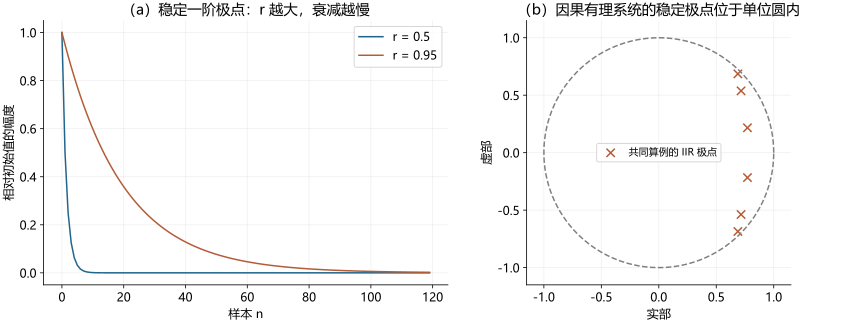
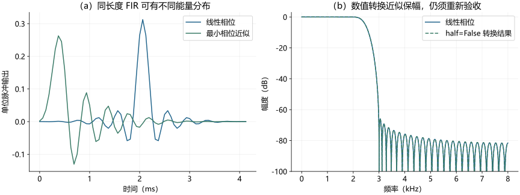
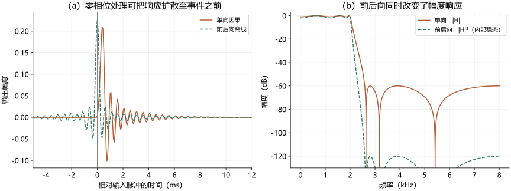
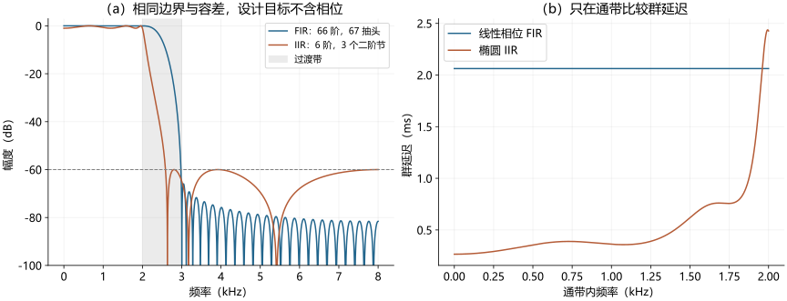
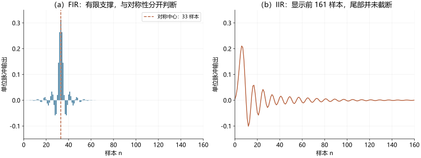

FIR 与 IIR 滤波器
FIR and IIR Filters · 深度词条 · 2026-10-29 · Draft，待专业审阅
在统一框架下比较 FIR 与 IIR 滤波器，连接卷积、反馈、零极点、稳定性和相位，展开两类设计与实现方法，并用共同指标算例说明听觉实验、设备和神经记录中的选择与验证。
| 术语信息 | 内容 |
|---|---|
| 分类依据 | 零状态单位脉冲响应是否只在有限个样本处非零 |
| FIR | 常用有限卷积实现；有限系数保证理想系统 BIBO 稳定 |
| IIR | 常用反馈递推；因果最简有理系统稳定需全部极点严格在单位圆内 |
| 相位 | FIR 可设计为线性或最小相位；常见 IIR 群延迟随频率变化 |
| 选择目标 | 共同权衡幅度、时间扩散、延迟、计算成本与有限精度 |
FIR 滤波器（finite impulse response filter，有限脉冲响应滤波器）和 IIR 滤波器（infinite impulse response filter，无限脉冲响应滤波器）是按零状态单位脉冲响应是否有限区分的两类线性时不变滤波器。FIR 的响应只在有限个样本处非零，常用有限卷积实现；IIR 的理论响应延伸至无限多个样本，常用反馈递推，以少量状态产生长时间的动态过程。12
两类系统都能改变声音的频率成分，也会改变时间结构。在听觉研究中，滤波用于刺激构造、频带分解、均衡、采样率转换和神经记录预处理；选择方案时需要同时检验幅度、相位、稳定性、延迟、计算成本及实际输出。FIR 不自动保证线性相位，IIR 不必然不稳定；“有限或无限响应”“线性或最小相位”“因果或非因果”“实时或离线”是不同的分类维度。
本文以固定实系数、离散时间、因果有理系统为主要对象，先建立统一数学框架，再分别说明设计和实现，用共同指标比较两类方案。真实耳蜗、动态压缩和自适应系统可能超出固定线性模型；所有数值图均为原创教学计算，不能直接作为设备处方或听觉获益证据。
定义、卷积与反馈递推
从卷积到传递函数
对于一个从样本 0 开始、长度为 的因果 FIR，输出为
、 分别是输入和输出， 为整数样本索引， 是滤波系数；输入输出同量纲时，系数无量纲。区间之外 。一个抽头（tap）是一个延迟位置及其权重，因而“64 阶”和“64 抽头”通常分别意味着 65 和 64 个系数。若末端系数实际为零，最简表示的阶数还会降低。
零状态传递函数为 。代入单位圆 得频率响应
这里 ， 和采样率 以 Hz 计， 以 rad/sample 计。每个延迟抽头给不同频率一个不同的相位，再由加权求和产生增强或抵消。滤波并不是逐个识别并删除“噪声样本”，而是利用邻近样本间的结构改变各频率分量的复增益。
一个可以手算的反例
两点移动平均 的响应为 。直流增益为 1，奈奎斯特频率处为 0，在两者之间平滑下降；它是一个很短的低通，却不是陡峭的抗混叠滤波器。
若改为 ，系统仍是 FIR，但系数既不对称也不反对称，其相位一般不再是频率的直线。这说明“有限响应”来自系数数量，“线性相位”来自系数结构，两种性质不能互相替代。以下对称条件也可以直接从上述频率响应求和式推出。
IIR：差分方程与符号约定
一种常用表示为
为样本索引， 为输入和输出， 是前馈系数， 是分母系数，。通常先全部除以 ，得到 。若输入输出同量纲，系数无量纲。这里反馈求和前有负号；有些框图把负号吸收进反馈系数，照抄系数而不检查约定会改变系统，甚至使其不稳定。3
在零初始状态下做 变换，有
分子为零的位置称零点，分母为零且未被约去的位置称极点。清除共同因子和负幂后，系统阶数由最简实现所需状态确定，不能只数显示出来的系数。若分母最终只相当于有限延迟或常数，系统可能退化成 FIR；因此“公式里有反馈”并不是无限响应的充分定义。
IIR 一阶平滑器的解析例子
设 ，，初始为零。输入单位脉冲后，，其中 为单位阶跃。响应每经过一个样本乘以 ，理论上永不精确终止，总和为 1，故直流增益为 1。单位阶跃输入的输出为 ，逐渐趋近 1。
取 ，响应相对初始值降到 −60 dB，即幅度比不超过 0.001，需要满足 ，最早整数样本是 。若 kHz，对应 8.4375 ms。这个时间是指定相对阈值下的一阶衰减时间，既不是系统阶数，也不等于通用群延迟或设备延迟。
由 得时间常数 ； 接近 1 时，。采样率改变而保持同一个 ，就会改变以秒表示的动态过程。若希望保持同一时间常数，应重新计算系数，而不能认为滤波器参数可跨采样率直接复用。
稳定性、零极点与共振
FIR 的有限响应与稳定性
有限系数的 FIR 满足 ，所以理想卷积系统是有界输入有界输出（BIBO）稳定的。有限精度实现仍可能溢出、削波或产生误差；“稳定”不保证输出在设备数值范围之内。量化若保持对称配对，可保留线性相位结构，但仍会改变幅度容差和零点位置。
IIR 的极点判据与动态过程
对于因果有理系统，在最简传递函数及通常零状态条件下，全部极点严格位于单位圆 内，是 BIBO 稳定的判据。它意味着任意有界输入都得到有界输出；等价的一般离散线性时不变判据是脉冲响应绝对可和。判据中的“因果”“最简”和“严格在内部”都不可省略。4
若一阶极点为 ，其响应不衰减，累加器面对常量输入会持续增长；若 ，响应指数增长。很接近 1 的稳定极点仍可能产生漫长尾部。实践中还要检查量化后极点、状态范围和异常输入，不应把双精度设计阶段的稳定性直接当作所有硬件实现的保证。
复共轭极点 可由二阶分母 产生。极点角度 对应模态振荡频率 ；半径 控制衰减。半径越接近单位圆，模态持续越久；完整频率响应峰的位置和高度还会受分子零点及其他节影响，不能把极点角度总当作实测峰频。
零点可压低特定频率，例如一对位于单位圆上的共轭零点可在相应频率形成理想陷波；附近极点决定过渡与振铃。极窄陷波对稳态干扰有选择性，却可能对短促事件留下长尾，带宽与时间过程不能分开评估。
全通滤波器还展示了另一种情况。取实数 ，。单位圆上分子与分母的模相同，故 ，但相位一般随频率变化；除去退化情况，它仍有无限响应。其群延迟为 样本。这个由频率响应直接求导得到的例子说明：IIR 不一定用于改变幅度；只测幅度，也可能完全漏掉它对时间结构的改变。

若不加因果条件，单看极点位置不足以确定双边 变换的稳定性，还要指定收敛域。若设计使用精确零极点抵消，外部传递函数看似简化，内部状态却可能保留不稳定模态；有限精度又会破坏精确抵消。工程实现应避免依赖这种脆弱的抵消来获得“稳定”。
从任务写出可检验的规格
设计低通首先需要采样率 、通带边界 、阻带边界 、通带容差与阻带衰减。过渡带宽是 。只给“截止 2 kHz”不足以确定设计，因为还不清楚允许多宽的过渡区、怎样定义截止、希望压低到何种程度。
若目标通带增益为 1，可要求 ，阻带要求 ； 为无量纲幅度误差，阻带衰减 ，单位 dB。以损失 dB 定义的通带约束与关于 1 对称的幅度误差并不完全相同，程序输入前应换算。波纹峰峰值、最大损失、最大绝对偏差也不能混用。
还应说明允许的群延迟、处理方式、系数精度和边界规则。若研究目标是 1 ms 级起始差异，就不能只要求幅度合格而容许很长的非因果扩散。若处理双耳刺激，应以左右通道复响应之比检验是否引入新的相对延迟；两个通道分别“看上去平滑”不够。
归一化频率也常造成错误：、 和 分别以周期/样本、奈奎斯特频率比例和 rad/sample 表示。其数值差一个 2 或 。代码若接受 fs，直接使用 Hz 往往更易核对，但仍需保存实际采样率。
FIR 设计：窗函数、等波纹与拟合
窗函数法：把无限理想响应变为有限序列
理想低通在 为 1，其他频率为 0，其反变换为
该 sinc 响应双向无限延伸，无法直接实现为有限因果滤波器。窗函数法先截取其中心，乘以有限窗 ，再移到 ：。截断相当于频域平滑，形成有限过渡带和旁瓣。较窄的主瓣有利于陡峭过渡，较低的旁瓣有利于阻带抑制，两者要权衡。1
矩形、Hann、Hamming、Blackman 和 Kaiser 窗提供不同权衡；不能把一个窗的标称旁瓣高度直接当作整个滤波器的保证衰减。Kaiser 窗允许用参数 调整形状，常用经验估阶式为 ，其中 ， 为适用范围内的衰减设计量。它是起始估计，结果仍要计算核验。5
固定衰减时，把过渡带缩窄一半通常会明显增加长度；仅仅提高采样率、同时保持以 Hz 表示的过渡宽度，也会提高所需抽头数。对称 FIR 的延迟以秒计未必因此减少。firwin 的 cutoff 对应半幅度点，约为 −6 dB，不是 Butterworth 常用的半功率 −3 dB 点。6
等波纹法：约束最坏频率误差
等波纹设计在选定频带上最小化加权最大误差，可写为 。 为目标实幅度， 为频带权重， 不含未约束的过渡区。Parks–McClellan 方法使用 Remez 交换思想求解常用线性相位问题。权重表达相对误差代价，不是直接填写 dB 衰减值。7
当任务强调“任何阻带频率都不能超过上限”，最大误差准则很有用；如果只控制平均误差，小范围窄峰可能被整体均值掩盖。等波纹也不自动给出最小的系统延迟：通常仍需指定长度，迭代搜索并核对收敛。对极窄过渡带、很大权重差或高阶设计，程序成功返回系数后也应检查实际极值。
最小二乘及任意响应拟合
最小二乘设计最小化频带内加权误差平方的积分，适合强调平均拟合的目标；频率采样与任意响应设计可以拟合测量响应或补偿曲线。方法之间不能只按“阶数相同”比较，因为其误差目标不同。深衰落的逆滤波尤其需要正则化和最大增益约束，否则可能用巨大增益放大噪声、超出换能器余量。若原系统的凹陷来自不可稳健逆转的干涉，增加抽头数也不能保证可用补偿。8
IIR 设计：经典原型与双线性变换
经典原型的不同目标
IIR 常从模拟原型出发，但数字 IIR 不要求曾有一个真实模拟电路。原型规定幅度或相位的形状，变换和离散化再确定数字系数；同一个“截止频率”在不同原型中可能具有不同定义。9
| 原型 | 典型幅度特点 | 选择时需要关注 |
|---|---|---|
| Butterworth | 通带最大平坦，幅度单调 | 给定阶数下过渡通常较缓，不保证群延迟平坦 |
| Chebyshev I | 通带等波纹、阻带单调 | 用通带波纹换取较快过渡 |
| Chebyshev II | 通带单调、阻带等波纹 | 阻带存在有限频率零点，临界频率约定需核对 |
| 椭圆 | 通带和阻带均可等波纹 | 同类幅度约束下可用较低阶数，但需关注群延迟与瞬态 |
| Bessel | 模拟低通原型重视低频群延迟平坦 | 幅度过渡较缓；数字变换后不能照搬全部模拟相位性质 |
Butterworth 的标准临界频率为幅度降至 ，即约 −3.01 dB。SciPy butter 给定 fs 时频率用同一单位，未给 fs 时则通常以奈奎斯特频率归一化。对带通、带阻，输入原型阶数与最终系统阶数也要区分：该接口的 对应的最终阶数是 。10
iirdesign 根据通阻带边界和损失约束，求指定基本类型的最小阶设计。这里的“最小阶”限定了原型族和幅度目标，不是全部可能数字系统中延迟、误差、能耗均最优。其默认类型为椭圆，因此复现代码应显式记录类型。11
选型时还需固定容差定义。比如“1 dB 通带损失”允许相对参考增益衰减到 ；它不等于关于 1 对称的正负 1 dB 波纹，也不同于 1 dB 峰峰波纹。只比较一条归一化曲线会掩盖增益标定差异。
双线性变换与频率预畸变
双线性变换用
把模拟传递函数 转为数字有理函数。 的单位为 s， 以 Hz 计， 无量纲；模拟左半平面映入单位圆内部，因此在精确运算下保持相应稳定性。模拟虚轴频率 （rad/s）与数字频率 （rad/sample）满足
映射是非线性的：低频近似线性，靠近奈奎斯特处压缩显著。若数字边界为 Hz，预畸变的模拟边界应为 。这里每个边界都要按相同约定处理；不能把 Hz 直接当成 rad/s 输入模拟设计。12
低层 bilinear 函数不自动预畸变，高层数字设计接口则按其规格执行设计。用户若在高层接口外再自行预畸变，可能重复变换。报告时应说明调用层次。脉冲响应不变法等其他离散化方法有不同的频率映射和混叠特性，不能将所有模拟转数字过程都视作双线性变换。
相位、群延迟与时间扩散
对称性给出恒定群延迟
若实系数满足 ，把对称抽头配对可写成
其中 是实值函数。当它非零且不改变符号时，相位斜率为 ，群延迟为 样本，即 秒。 穿过零时可出现 相位跳变，故这是“广义线性相位”；零点处不能强行解释相位或群延迟。反对称系数也有固定相位常数加线性项的表示。13
| 类型 | 长度 | 实系数关系 | 被强制为零的频率 | 典型适用范围 |
|---|---|---|---|---|
| I | 奇数 | 对称 | 无必需端点零点 | 常规低通、高通、带通 |
| II | 偶数 | 对称 | 奈奎斯特频率 | 低通；不适合要求奈奎斯特处通过的高通 |
| III | 奇数 | 反对称 | 直流与奈奎斯特频率 | 近似微分、希尔伯特变换的部分设计 |
| IV | 偶数 | 反对称 | 直流 | 允许奈奎斯特处非零的反对称设计 |
这些端点限制由配对求和得到，并非某个程序独有的限制。标准低通若选偶数抽头，奈奎斯特处必为零；设计高通时忽略这一点，可能遇到无法满足的规格。firwin 的奇偶约束也体现了这一区别。6
恒定群延迟表示不同通带频率的相位斜率相同，不能保证整个输出波形只是原输入的平移；幅度选择仍会改变波形。只有相关频带内复增益近似为常量幅度乘以纯延迟时，才近似保持该信号的形状。对短促音，滤波器的响应长度本身就是时间分辨率的一部分。
前振铃与因果性
因果线性相位 FIR 的响应从 开始，对称中心在 。在原始采样时钟上，它不会先于输入脉冲输出；若离线把结果向前平移 个样本以补偿延迟，响应的一半便会位于事件之前。所谓前振铃必须说明相对于输入起点、主峰还是补偿后时间轴。对听觉诱发电位或神经起始时间，补偿群延迟不能撤销已发生的波形扩散。1415
最小相位 FIR 是另一种时间安排
最小相位将响应能量尽可能集中于早期；在适当的同幅度比较集合内，它具有最小的相位延迟特性，但不是“所有频率零延迟”。对有限序列，可通过零点反射、谱因子分解或倒谱方法构造相应设计。放弃系数对称性后，FIR 仍可有限且稳定，群延迟则通常随频率变化。16

转换程序的选项会改变比较条件。例如 SciPy minimum_phase 的默认 half=True 通常给出约一半长度及原幅度响应的平方根近似；不能把它直接当作“保持原幅度而延迟更小”。要求保幅时需明确 half=False 等条件，并重新检查阻带。17
IIR 群延迟与离线前后向处理
常见频率选择型因果 IIR 的群延迟随频率变化；高选择性区域往往需要特别检查，但不能从“IIR”三个字推断一条固定延迟曲线。群延迟定义为 ，单位样本，换成秒须除以 。幅度零点、极低信噪比频带或展开不可靠的位置，不宜直接解释数值导数。相位延迟与群延迟词条给出更完整的条件。
离线前后向滤波将同一实系数滤波器前向、反向各执行一次。在无限记录的内部稳态描述下，等效响应是 ，相位抵消；幅度的 dB 数值加倍，通带损失、阻带衰减和截止点都会改变。有限记录还受延拓和初始化影响。1819

零相位因此不是无失真：去掉频率分量和时间扩散依然存在。对峰潜伏期、起始时间和神经方向性，尤其应模拟已知时序事件，检查处理是否产生事件前波动或改变峰的位置。1415
若需要实时低延迟，可减少不必要的选择性、使用适当原型或重新分配频带，但不能通过简单“减去群延迟”消除全部频率相关相位。对单频而言能做相位换算，对宽带语音则需要检查完整复响应。低阶 IIR 不一定比某个短 FIR 有更低的系统总延迟，特别是在高 Q 共振、缓冲和通信占主导时。
计算实现、有限精度与状态管理
FIR：直接卷积、FFT 与多相
直接卷积每输出一个样本需要约 次系数乘法；实对称系数可先相加配对输入，减少乘法次数，延迟线仍要保留相应历史。SIMD、缓存、块大小和硬件乘加能力共同影响实际运行时间，不能仅用阶数预测功耗。
很长的 FIR 可采用重叠相加、重叠保留或分区 FFT 卷积。FFT 将计算移到频域；为得到线性卷积而非循环卷积，必须安排足够零填充并正确拼接有效段。更大的块可能减少每样本运算，却引入等待一个块的额外时间。滤波器的群延迟与实现的缓冲延迟要分别报告。20
在插值和抽取中，多相结构把系数按相位分组，只计算最终需要的输出。它改变计算组织而不改变所对应的理想输入输出关系。插值用于抑制镜像，抽取前用于抑制会折叠进保留频带的能量。截止边界应按转换前后采样率共同确定，而不是对每个中间样本做完卷积再全部丢弃。21
分块处理还必须保存 个历史输入或等效滤波状态。把连续语音逐帧独立从零初始化，会在每个帧边界加入人工瞬态。对于多通道滤波器组，单通道幅度和相位合格也不代表相加后可重建；还需要考虑重叠、通道延迟、抽取混叠及合成权重。
IIR：级联二阶节
高阶系统可以写成多个一阶或二阶部分的乘积：
是节数， 是总增益；奇数阶可包含一阶节。二阶节（second-order section，SOS）常称 biquad。实系数设计把共轭根配对，避免把许多根展开成一个高阶多项式再处理。这样通常能减轻系数量化和数值误差，但不会免除内部状态范围与节间增益检查。1022
直接 I 型分别保存输入与输出延迟；直接 II 型共享延迟存储，状态数量更省，但内部信号范围可能较大。转置直接 II 型在软件二阶节实现中很常见。它们在精确运算下可有相同的外部传递函数，有限精度误差却不同。323
SciPy 的 SOS 每行依次存放 ，滤波器按其接口规范使用。不同平台可能要求另一种排列或反馈符号。实现移植必须用已知脉冲和频率响应核验，不能只确认数组尺寸。22
定点实现还面临累加器溢出、饱和、舍入噪声及极限环：反馈可使零输入时的量化残留继续循环。仅检查量化后极点仍不足以覆盖这些非线性数值行为。可比较不同位宽、节排序与缩放，测试大信号后转为零输入、静音附近以及长时间运行；双精度离线曲线无法代替目标硬件测试。
IIR：初始状态、分块与记录端点
IIR 输出由输入驱动的零状态响应和初始状态引起的零输入响应共同构成。对一个已经处于稳态的声音片段，如果突然把状态设为零，输出会先经历人工建立过程。令滤波器对首样本常值处于稳态，有时能减轻边缘跳变，但这种初始化只是对记录之前信号的假设，不能还原未知过去。
对连续数据，应在相邻块之间传递内部状态。下例中 x 是一维连续信号，块间不重置；chunk 可用于流式测试。
import numpy as np
from scipy import signal
sos = signal.iirdesign(2000, 3000, 1, 60,
ftype='ellip', output='sos', fs=16000)
def process_stream(x, chunk=256):
state = np.zeros((len(sos), 2)) # 本例明确使用零初始状态
parts = []
for start in range(0, len(x), chunk):
y, state = signal.sosfilt(sos, x[start:start+chunk], zi=state)
parts.append(y)
return np.concatenate(parts) if parts else np.empty(0)输入输出维度或多通道布局变化时，状态形状也要按接口调整。块大小影响调度和缓冲延迟，不应改变该固定系统的样本结果；因此整段与携带状态分块结果的比较，是实现检查的一种有效办法。
断点与伪迹不能盲目当连续信号跨越。大幅伪迹可使长尾污染其后多个分析窗，前后向处理还会污染之前。应保存有效段和断点信息，用响应衰减和任务容差确定边缘排除范围；“固定丢弃若干毫秒”不适用于所有截止频率与阶数。
共同指标下的完整比较算例
本算例是教学设定： Hz，低通在 0–2000 Hz 最大损失不超过 1 dB，从 3000 Hz 起衰减至少 60 dB。FIR 用 Kaiser 窗、2500 Hz 截止及 66 dB 估阶设计量留出余量；IIR 用满足同一边界的椭圆设计。两者满足同一幅度容差，并不具有逐频相同的幅度，更未约束相同的相位。511

import numpy as np
from scipy import signal
fs = 16000
L, beta = signal.kaiserord(66, 1000 / (fs / 2))
L += (L % 2 == 0) # 本例选择奇数长度
b = signal.firwin(L, 2500, window=('kaiser', beta), fs=fs)
sos = signal.iirdesign(2000, 3000, 1, 60,
ftype='ellip', output='sos', fs=fs)
f = np.linspace(0, fs / 2, 65537)
_, H = signal.freqz(b, worN=f, fs=fs)
db = 20 * np.log10(np.maximum(abs(H), 1e-15))
print(L, (L - 1) / 2 / fs * 1000) # 抽头数、群延迟 ms
print(db[f <= 2000].min(), -db[f >= 3000].max())用密网格检查能发现大多数指标失配，但不能把有限频点检查称为连续频率上的严格证明。设计临近容差时可继续定位局部极值，或在关键频段加密。若修改采样率、边界或窗口，图中的阶数与延迟也必须重新计算，不能复用旧标签。
本地 SciPy 1.17.1 计算得到 67 抽头、66 阶，群延迟为 33 样本，即 2.0625 ms；所查网格中通带增益约 −0.00266 至 +0.00579 dB，最小阻带衰减约 65.95 dB。椭圆 IIR 为 6 阶、3 个二阶节，达到 1 dB 通带损失与 60 dB 阻带衰减。FIR 的通带明显更平坦，说明“同容差”不意味着两种设计恰好用满相同的误差余量，也不意味着本例 FIR 已经是该任务的最短长度。

| 比较项目 | 本例线性相位 FIR | 本例椭圆 IIR |
|---|---|---|
| 设计自由度 | 多个有限卷积系数 | 前馈与反馈系数、零极点 |
| 时间响应 | 有限且对称 | 衰减振荡尾部，非对称 |
| 通带群延迟 | 恒定 | 随频率变化 |
| 稳定性检查 | 理想有限系数系统 BIBO 稳定 | 须核对极点及实际实现 |
| 实现成本 | 可用对称性、FFT、多相降低成本 | 用 SOS 实现，需管理反馈状态与数值范围 |
本地计算中，IIR 最大极点半径约 0.97140，严格小于 1；在 0、1000 和 2000 Hz 附近，群延迟分别约 0.265、0.362 和 2.427 ms。FIR 为 67 抽头，通带群延迟固定 2.0625 ms。因此本例 IIR 在通带大部分区域延迟较小，却在边缘超过 FIR。用一个平均延迟代表整条曲线，可能掩盖瞬态频率成分之间的相对错位。
计算这些数值时先在密网格上展开复响应相位，再对数字角频率求导，最后换算为毫秒。端点附近数值导数是近似，因此正文用“约”并保留实际计算网格。如果在阻带零点处也强行求导，可能产生很大或不可靠的结果；把这些尖峰直接解释成声音传播时间没有依据。
听觉实验、设备与模型中的应用
刺激构造与神经记录
研究时域包络、时域精细结构或双耳时间差时，滤波是刺激定义的一部分。应保存原始声、处理系数、输出声和声学校准；若滤后统一 RMS，需说明在哪段、哪个频带估计能量。分别归一化不同条件可能抵消原本希望操纵的电平差。
分析脑电和听觉诱发电位时，高通可改变慢成分与基线，低通可平滑峰值，窄过渡带可扩散短事件。比较峰潜伏期或因果方向时，需要用已知起点的模拟事件检查整条分析链，不能仅把滤波器名称写入方法。具体数据的伪迹强度和记录断点也决定边界影响。1415
连续记录在合适的有效段内滤波，通常比先切很短的试次更易保留真实上下文；但不能让滤波跨越断开、不同实验段或严重伪迹。零填充、镜像延拓与保持常值分别假设了不同的记录外信号。必须说明延拓方式及舍弃边缘的范围，舍弃长度应结合响应和分析目标判断。
助听器、人工耳蜗与听觉滤波模型
在助听器和人工耳蜗信号处理中，FIR 可用于分析滤波器组、均衡或采样率转换。是否适合实时系统取决于总体延迟预算、通道数、运算平台和功耗；离线设计效果好，不足以证明可直接部署。开放验配时直达声与处理声叠加，还应检验完整两路径响应，而不只检验数字滤波器。
FIR 也可逼近某个听觉滤波器的线性响应，但这种逼近只是特定条件下的输入输出模型。它不自动包含耳蜗压缩、声级依赖、适应或神经噪声。算法频带数也不等于耳蜗或植入者真正可分辨的独立信息通道数。
共振模型与通道合成
共振型 IIR 可以表示声道或声学腔体的部分线性行为，与共振峰和房间声学有关；听觉滤波模型也可用级联结构逼近。但数字反馈不是解剖反馈的直接证据，数学上像衰减振荡也不足以证明某个生理机制。真实耳蜗具有声级依赖与非线性，固定系数 IIR 只是局部或简化模型。
滤波器组还要检查通道交界的相位与增益。各带单独满足幅度要求，混合后仍可能因相位抵消出现凹陷；对合成输出、双耳同步或保留时域精细结构的任务，需要验证总响应。若系统动态改变系数，切换可引入瞬态；每一组固定系数稳定，也不能直接证明任意快速切换过程稳定。
对听觉脑干反应等短潜伏期记录，原型、截止、方向和边界同样会影响峰形与潜伏期。应保留原始数据，使用已知起点的响应检查整条处理链；神经响应的时序不能仅凭滤波后的一个峰判断。1415
验证、报告与结果解释
把数字设计与实际声学输出分开验证
数字阶段先用单位脉冲检验系数和时间索引，再计算复频率响应；若输入是平稳随机过程，输出功率谱密度满足 。这里是功率增益，不能把 直接乘在功率谱上。对白噪声的谱估计会受有限记录和估计方差影响，输出看起来不够平滑并不自动意味着系数错误。
进入实际播放链后，声卡、扬声器、耳机、声耦合器和房间均会增加自己的响应。可以用受控扫频或宽带测试声测量完整链条，检查削波、电平和时钟同步；由测量估计的响应还要报告参考通道、窗长、平均和信噪比。数字阻带达到 60 dB，并不保证麦克风处也测到同样衰减，硬件噪声底或声学泄漏可能成为限制。
若研究瞬态，应另外输入有明确起点的音包或阶跃，检查起始、主峰、振铃和有效支撑；若研究双耳线索，可同时记录两个通道，用同一时间参考检查相对相位。频域验证和时域验证回答不同问题，应围绕实验操纵选择观察量。
如何构造有解释力的方案比较
一个可行的教学实验是固定原始语音、采样率和幅度目标，比较线性相位 FIR、对应最小相位近似和单向 IIR。首先核对各条件的实际幅度，再分别保留原延迟和补偿纯延迟，以区分整体到达时间与频率间相对延迟；输出保持共同标定，不能随意把每一段单独归一化。对前后向条件，要另设计补偿其幅度平方效应，才适合把差异主要归因于相位。
在无听者阶段，可报告幅度误差、相位差、包络变化、峰值和处理成本；进入行为实验后，则需明确音质辨别、可懂度还是偏好，并说明听者听力状态、播放声级、材料和随机化。两种波形不同是信号层结论，是否可听以及是否影响理解，需要对应任务的数据。这样安排有助于避免把“线性相位”或“最小相位”当作无条件的听觉优越性标签。
实现与分块一致性检查
验证可分为三步。先在设计精度下检查频率响应与极点，确认采样率、边界、反馈符号和增益无误；再在实际位宽和结构上测试脉冲、阶跃、扫频与大信号，观察建立过程、内部状态、溢出和静音残留；最后通过实际输入输出端口测量总延迟与声学响应。不同步骤的误差要有各自容限，不能用最后输出没有明显异响代替数值检查。
固定系数处理还可用同一输入核对整段和分块结果。若两者不一致，优先检查状态是否传递、轴是否选错、每节系数是否归一化，以及块边界是否重复或丢失样本。对参数更新系统，需要额外验证从旧状态转到新状态的过程；单独画出更新前后的两条稳定曲线并不足够。
如果只是研究算法本身，直接计算复频响比用短噪声记录反推更确定；如果研究目标包含声卡或耳机，则必须测量整条声学链。实际测量中的噪声底、有限窗和麦克风响应会限制深阻带估计，缺少这些条件时不应将测得差异全部归因于 IIR 的理论缺陷。
IIR 长尾与可忽略误差
IIR 没有一般性的有限“结束点”，但可以规定有效长度。例如在已知输入上比较完整计算与截短尾部的波形误差，或以脉冲响应的剩余能量比例判断。在要求控制任意有界输入误差时，可利用剩余绝对和：若 ，截断 之后的卷积尾部引起的逐样本误差不超过 。这是给定条件下的上界，而不是听觉可察觉阈值。
剩余能量、相对峰值衰减和上述绝对和是不同标准；它们可能给出不同的有效长度。对高动态范围实验，微小残留可能仍与目标信号相当；对低信噪比记录，则可能先受测量噪声限制。报告有效长度时必须说明准则、参考幅度和单位，不能仅说“尾部已经消失”。
最小报告信息
一份可复现报告应保存采样率与输入单位、全部频带边界、容差及 dB 定义、最终阶数、全部系数或 SOS、增益、设计方法与软件版本，明确单向或前后向、相位类型、初始化、端点与分块状态。数字阶段报告实际频响、群延迟和脉冲响应；实时部署另报位宽、内部数值范围、缓冲及端到端延迟，多通道另报同步和重建误差。专业听觉评价还需报告人群、材料、声级、任务和设备耦合条件。
方法沿革与继续研究
FIR 设计从截断理想响应的窗函数方法，发展出面向最大误差的等波纹优化，以及面向任意测量曲线的拟合；计算实现则从直接卷积扩展到 FFT 和多相结构。SciPy 的 Remez 文档列出了 McClellan、Parks 和 Rabiner 在 1973 年的相关工作；这里据方法文档追溯这一技术线索，不声称重新核验全部原始论文。7
听觉应用中值得继续研究的问题，是在任务所需频率分辨率下，如何共同约束时间扩散、可接受延迟、通道重建和实际感知结果。最小相位、分区卷积或多速率处理提供不同手段，但各自改变了比较条件。严谨的方案比较应先固定任务和容差，再测量可理解度、音质或神经分析偏差，避免把某个工程指标直接当作听觉收益。
递归结构把长响应压缩为少量状态，经典原型提供可解释的选择性，双线性变换连接模拟与数字设计，SOS 则帮助在有限精度中保留目标系统。这条技术线索说明为什么“算出系数”只是实现的起点；运行中的状态、端点和数值范围同样属于滤波器行为。291222
对于动态更新参数的系统，还需检验系数切换和状态迁移；每组固定系数的稳定性不能代替时变系统的整体分析。工程指标改善是否转化为可懂度、音质或实际使用收益，需要对应研究任务的数据。
参见与图源说明
可结合相位延迟与群延迟、频谱与功率谱密度、最小相位系统、倒谱、听觉滤波器、时域包络和通道相互作用阅读。
五张图均为本站原创教学计算，未转载第三方图像。脚本为 scripts/generate-fir-iir.py；实际软件版本、系数和数值检查保存于 docs/research/fir-iir-2026-10-29/figure-verification.json。来源覆盖基础理论和公开方法文档，本次合并未开展新的文献检索，不是完整最新研究综述。词条保留 Draft 待专业审阅。
参考文献与证据范围
[1] Steven W. Smith (1997). The Scientist and Engineer’s Guide to Digital Signal Processing, Chapter 16: Windowed-Sinc Filters. California Technical Publishing；作者公开教材。访问范围：fulltext。读取理想低通、sinc、截断与加窗及频率/时域权衡相关段落。未采用教材中对全部FIR/IIR性能的宽泛排序；图为自行计算。
[2] Steven W. Smith (1997). The Scientist and Engineer’s Guide to Digital Signal Processing, Chapter 19: Recursive Filters. California Technical Publishing；作者公开教材。访问范围：fulltext。读取递推、一阶平滑器及响应相关段落；正文一阶衰减时间自行推导和计算，不把递归结构直接等同于无限响应的充分定义。
[3] Julius O. Smith III (在线版，访问于2026-10-29). Direct-Form I. Introduction to Digital Filters；作者教材公开镜像。访问范围：fulltext。读取差分方程、前馈/反馈负号与直接I型实现，有限精度实现性质。
[4] Julius O. Smith III (在线版，访问于2026-10-29). Stability Revisited. Introduction to Digital Filters；作者教材公开镜像。访问范围：fulltext。读取因果不可约有理系统的单位圆极点判据及指数响应；正文用一般BIBO绝对可和判据限定条件，不把仅衰减至零推广为任意系统充分条件。
[5] SciPy community (访问于2026-10-29). scipy.signal.kaiserord. SciPy 1.18.0 在线方法文档；本地计算为1.17.1。访问范围：documentation。核对Kaiser经验估阶、过渡宽度按奈奎斯特归一化及须验证实际频响。本地算例额外留出衰减余量。
[6] SciPy community (访问于2026-10-29). scipy.signal.firwin. SciPy 1.18.0 在线方法文档；本地计算为1.17.1。访问范围：documentation。核对抽头数、I/II型与奇偶限制、截止的半幅度定义、fs单位和窗函数接口。
[7] SciPy community (访问于2026-10-29). scipy.signal.remez. SciPy 1.18.0 在线方法文档；本地计算为1.17.1。访问范围：documentation。核对加权最小最大误差、频带与权重接口，以及文档列出的1973年方法出处；未冒称阅读全文原始论文。
[8] SciPy community (访问于2026-10-29). scipy.signal.firls. SciPy 1.18.0 在线方法文档；本地计算为1.17.1。访问范围：documentation。读取最小二乘积分准则及其与最坏误差约束的区别。
[9] Steven W. Smith (1997). The Scientist and Engineer’s Guide to Digital Signal Processing, Chapter 20: Chebyshev Filters. California Technical Publishing；作者公开教材。访问范围：fulltext。读取Butterworth与Chebyshev响应及波纹换取过渡选择性的相关解释；不引用固定运行速度比值。
[10] SciPy community (访问于2026-10-29). scipy.signal.butter. SciPy 1.18.0 在线方法文档；本地计算为1.17.1。访问范围：documentation。核对Butterworth半功率临界点、归一化、带通/带阻最终阶数及高阶多项式的数值问题与SOS建议。
[11] SciPy community (访问于2026-10-29). scipy.signal.iirdesign. SciPy 1.18.0 在线方法文档；本地计算为1.17.1。访问范围：documentation。核对按给定原型族和通阻带规格求阶、参数单位、默认椭圆原型与SOS输出；不把最小阶理解为全任务最优。
[12] SciPy community (访问于2026-10-29). scipy.signal.bilinear. SciPy 1.18.0 在线方法文档；本地计算为1.17.1。访问范围：documentation。读取双线性代换与频率畸变，核对低层函数不自动预畸变。正文预畸变公式由代换在单位圆上自主推导。
[13] MathWorks (访问于2026-10-29). FIR Filter Design. Signal Processing Toolbox R2026b 官方方法文档。访问范围：documentation。读取线性相位四型、端点限制及设计分类。未采用其对相位延迟恒定的宽泛概括；正文保留相位常数、符号跳变和零点条件。
[14] MNE-Python developers (访问于2026-10-29). Background information on filtering. MNE-Python 1.13.2 官方方法教程。访问范围：documentation。读取FIR/IIR、因果/非因果、滤波长度、延迟补偿和时间扩散相关段落；仅支撑预处理方法，不据此给出临床设置或神经响应常模。
[15] Widmann A, Schröger E, Maess B. (2015). Digital filter design for electrophysiological data--a practical approach. Journal of neuroscience methods, 250, 34-46。访问范围：abstract。电生理数字滤波的方法与伪迹；零相位不等于没有时间扩散。
[16] Julius O. Smith III (在线版，访问于2026-10-29). Minimum-Phase Filters. Introduction to Digital Filters；作者教材公开镜像。访问范围：fulltext。读取最小相位定义及全通分解相关内容；最小相位与同幅度比较条件、FIR可非线性相位。
[17] SciPy community (访问于2026-10-29). scipy.signal.minimum_phase. SciPy 1.18.0 在线方法文档；本地计算为1.17.1。访问范围：documentation。核对同态法、half=True默认的长度及平方根幅度，half=False的同长度保幅近似。本地用half=False并绘制实际结果。
[18] SciPy community (访问于2026-10-29). scipy.signal.filtfilt. SciPy 1.18.0 在线方法文档；本地计算为1.17.1。访问范围：documentation。读取前后向处理、零相位、阶数及端点规则；正文幅度平方明确限定实系数与理想内部稳态。
[19] SciPy community (访问于2026-10-29). scipy.signal.sosfiltfilt. SciPy 1.18.0 在线方法文档；本地计算为1.17.1。访问范围：documentation。读取二阶节前后向滤波与端点延拓参数；不把有限记录视为全局时不变。
[20] SciPy community (访问于2026-10-29). scipy.signal.fftconvolve. SciPy 1.18.0 在线方法文档；本地计算为1.17.1。访问范围：documentation。读取FFT线性卷积、输出模式、边界与重叠相加入口；不把same模式当作因果流式输出。
[21] SciPy community (访问于2026-10-29). scipy.signal.upfirdn. SciPy 1.18.0 在线方法文档；本地计算为1.17.1。访问范围：documentation。核对插值—FIR—抽取与多相实现；支持计算结构而非设备感知收益。
[22] SciPy community (访问于2026-10-29). scipy.signal.sosfilt. SciPy 1.18.0 在线方法文档；本地计算为1.17.1。访问范围：documentation。读取SOS数组排列、转置直接II型、状态输入输出和高阶数值示例。
[23] Julius O. Smith III (在线版，访问于2026-10-29). Direct Form II. Introduction to Digital Filters；作者教材公开镜像。访问范围：fulltext。读取共享延迟状态、结构等价和内部动态范围相关说明；不声称省状态总能改善数值性能。